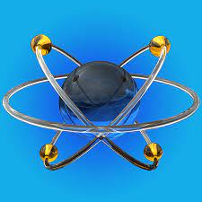
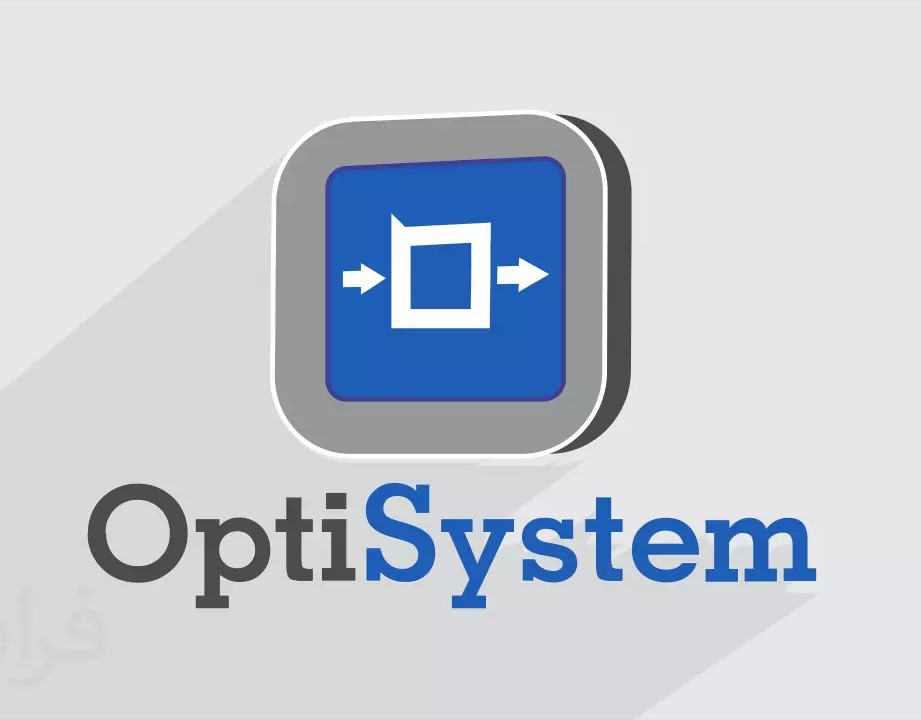

Softwares de Descarga
PROTEUS
Herramienta de diseño y simulación de circuitos electrónicos, útil para integrar componentes electrónicos con sistemas de comunicaciones ópticas, como controladores o interfaces.
Descargar ProteusOPTISYSTEM
Software de simulación especializado en sistemas de comunicación óptica, permite modelar redes ópticas, fibras, fuentes de luz, detectores y más para analizar y optimizar sistemas de transmisión de datos.
Descargar OptisystemMATLAB

Ampliamente utilizado en ingeniería, incluyendo comunicaciones ópticas. Se emplea para modelar y simular sistemas ópticos, procesar señales y desarrollar algoritmos para el análisis de datos en este campo.
Descargar MatlabPYTHON

Es un lenguaje de programación versátil y popular en aplicaciones científicas. En comunicaciones ópticas, se utiliza para simulaciones, análisis de datos, implementación de algoritmos y también como herramienta de prototipado rápido debido a sus numerosas bibliotecas especializadas en ciencia y tecnología.
Descargar PythonLABVIEW
Herramienta de desarrollo de sistemas que puede integrarse con equipos de medición óptica, facilitando la adquisición y análisis de datos en entornos de laboratorio para comunicaciones ópticas.
Descargar Labview